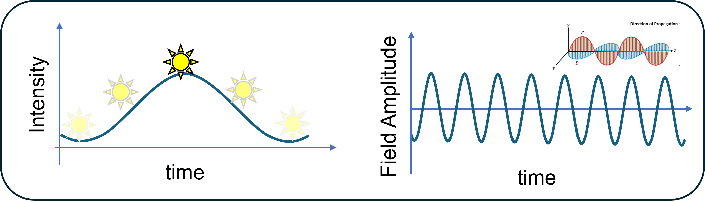

Welcome to Doppler Rendering in One Weekend.
The Doppler effect is a physical phenomenon that frequency changes due to moving objects or observers.
Doppler rendering is about simulating such Doppler effect on complex scene, using existing Monte Carlo path tracers.
In this tutorial, you will learn the basics of Doppler effect, and understand how Doppler effect is fundamentally different
for AMCW (intensity Doppler) and coherent detections (field amplitude Doppler), and also understand its implication on each detections'
simulation strategies.
Let's first review the basic concepts of the Doppler effect, that you have learned in high-school physics.
1.1 What is the Doppler Effect?
The Doppler effect describes the apparent change in frequency of a wave
when there is relative motion between the source and the observer.
For a wave with frequency \(f\) and wavelength \(\lambda\), if the source
moves with velocity \(v_s\) and the observer with velocity \(v_o\) along the
line of sight (positive when approaching), the observed frequency is
\[
f' \;=\; f \,\frac{c + v_o}{c - v_s},
\]
where \(c\) is the wave propagation speed (e.g., \(c \approx 3\times10^8\ \text{m/s}\) for light in vacuum and \(c \approx 3.4\times10^2\ \text{m/s}\) for sound in air).
In the limit where both velocities are much smaller than \(c\),
the frequency shift \(\Delta f = f' - f\) simplifies to
\[
\Delta f \;\approx\; f \,\frac{v_r}{c},
\]
with \(v_r = v_o - v_s\) denoting the relative radial velocity.
This linearized form is especially common in radar, lidar, and optical
heterodyne detection, where shifts of only a few kilohertz or megahertz
are measured against optical carriers in the terahertz range.
1.2 Applications of the Doppler Effect
The Doppler effect finds use in many areas of science and technology. By interpreting
frequency shifts as evidence of motion, it enables accurate measurements in diverse fields.
(A) Transportation and Safety: Radar guns measure vehicle speeds using microwave Doppler shifts.
Modern automotive radar and lidar systems also exploit the Doppler effect to distinguish moving from
stationary objects, improving driver-assistance and self-driving capabilities.
(B) Weather and Environmental Sensing: Doppler weather radar maps wind fields and storm rotation
by detecting shifts from raindrops and snow. Coherent Doppler lidar, using infrared lasers, profiles
wind fields for wind-farm siting, turbine control, and airport wind-shear detection.
(C) Industrial and Structural Monitoring: Laser Doppler vibrometry measures vibration and
deformation of structures without contact. Laser Doppler anemometry is used in fluid mechanics
to obtain precise local flow velocities. In manufacturing, Doppler sensors track conveyor and reel speeds.
(D) Medicine and Biology: Doppler ultrasound enables doctors to assess blood flow in arteries and
veins in real time. Laser Doppler flowmetry measures microcirculation in skin and tissue, while
Doppler optical coherence tomography (OCT) reveals blood flow at the microscopic scale.
(E) Space and Astronomy: Astronomers detect exoplanets by measuring the Doppler wobble of their host stars,
track spacecraft velocity with extreme precision, and use Doppler shifts in starlight to study cosmic expansion.
On the Sun, Doppler imaging maps flows and oscillations across its surface.
Figure 1. Applications of the Doppler effect (click to view full size) (A1) Doppler radar guns (A2) Coherent Doppler lidar (FMCW lidar)
(B1) Doppler weather radar (B2) Coherent Doppler wind lidar (C1) Laser Doppler vibrometry (C2) Laser Doppler anemometry
(D1) Doppler ultrasound (D2) Laser Doppler flowmetry (E1) Red and blue shift (E2) Distribution of galaxies with different red shift.
1.3 Why do we need Doppler Rendering?
So how can we simulate the Doppler effect? Why do we need complex Doppler rendering algorithms to simulate these applications?
Can’t we just use well-known Doppler formular to interpret and model the Doppler frequency shift?
Simple Doppler formular would works when the measurement is dominated by a single bounce off a simple surface.
But in real scenes we get complex geometry and lots of interreflections.
This typically happens for non-line-of-sight imaging, scanning glossy objects,or volumes full of tiny scatterers like red blood cells or aerosols. In those settings, the simple formulas miss important contributions.
1.4 Intensity vs. Field Amplitude Doppler
Though Doppler effect can occur in any wave, we only focus on optical range (visible - infrared), where standard light transport applies and lets us build on existing radiometric path tracers.
In such optical range, the Doppler effect manifests in two ways.
The first is intensity Doppler, where the effect appears as a modulation in the intensity of the light source.
Doppler Time-of-Flight imaging systems leverage this phenomenon.
The second is field Doppler, where the Doppler effect occurs in the electromagnetic field of the light itself.
A well-known example is the red and blue shift observed in astronomy.
However, this shift also occurs at smaller scales in applications such as Doppler lidar, blood or wind velocimetry.
These techniques that rely on optical interference are collectively referred to as optical heterodyne detection.
Interestingly, these two Doppler effect measures different quantities due to huge wavelength difference which will be further explained in later section.

In optical imaging system, Doppler effect can manifest in two ways; Intensity (wavelength : 10m) vs Field Doppler (wavelength : 1 um)
2.Doppler Effect for Simple Case
Here, we will derive the Doppler effect for the simplest case, reflection from the single object.
2.1 Monostatic Doppler Effect
Setup. A source emits a sinusoid \(s(t)\) of angular frequency \(\omega_0 = 2\pi f_0\) and wavelength \(\lambda_0\).
The receiver is collocated with the source. A point target at range \(d(t)\) moves with constant radial velocity \(v\)
(positive when moving toward the sensor). Reflectivity is 1 and amplitude variations are ignored
(we focus on phase).
Sign convention. With \(v<0\) defined as receding, \(\phi(t)\) decreases linearly, producing a negative
angular rate \(\tfrac{d\phi}{dt}\); the observed Doppler shift is \(f_0 2v/c\).
Doppler shift from a single object moving away or toward to the collocated camera and light (Monostatic geometry).
Interactive Demo
Toward sensor (+) · Away (–): 0.10 m/s
Outgoing travels right and stops at the target. Return travels left and is drawn only to the left.
Phases match at the target. Bottom panel spans a fixed window \(t\in[0,20]\) s; outgoing starts with phase 0.
Top: outgoing (blue, →) up to the target. Bottom: return (green, ←) from the target to the left.
Vertical line marks the hit; ticks show identical \(y=\cos\phi\) at the hit.
Time traces at the sensor. Left edge \(t=0\), right edge \(t=20\) s. Outgoing (blue) starts at phase 0; return (green) includes round-trip delay.
3. Doppler Effect for Rough Surface
Here, we will derive the Doppler effect for a rough surface at arbitrary angle.
Global Optics (synced)
3.1 Phasor sum for Static Rough Surface
σ: 1.50 µm
ℓ: 8.0 µm
h(x) over L = 100 µm. Middle half (25–75 µm) is used for the phasor sum. Vertical axis fixed at ±10 µm. Gray fill = surface.
Phasor Sum (middle half, t = 0)
Window M = — samples
|S| = — |S|/M = —
∠S (rad) = —
Re(S) = — · Im(S) = —
\(z_k=\exp\{j[\Delta k_x x_k - (2\pi/\lambda)\,q\,h(x_k)]\}\), with
\(q=\cos\theta_i+\cos\theta_o\), \(\Delta k_x=(2\pi/\lambda)(\sin\theta_o-\sin\theta_i)\).
3.2 Phasor sum for Dynamic Rough Surface
v: 0.50 m/s (≡ 0.50 µm/µs)
The blue window moves right and wraps every 1 s (visualization).
FFT is computed from S(t) built with the fixed middle window and the shifted surface \(h(x-vt)\).
Live Phasor (uses S(t) at the current animation time)
Window M = — samples
|S(t)| = — |S|/M = —
∠S (rad) = —
Re(S) = — · Im(S) = —
Live time mapping: one real-time second corresponds to a spatial shift of \(T\cdot v\) with \(T=10\,\mu s\).
|FFT{S(t)}| (rectangular window), frequency in MHz, 0…Nyquist (M=128 over T=10 µs).